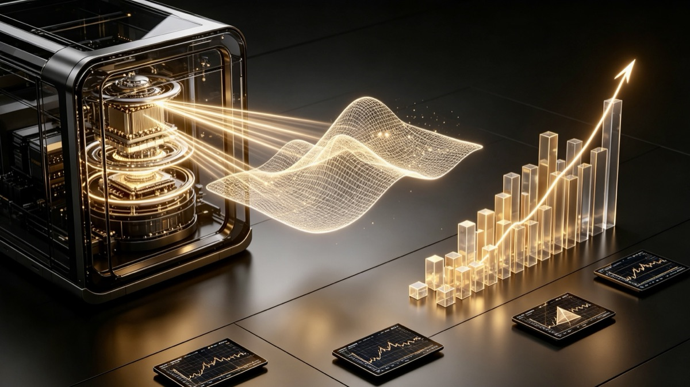
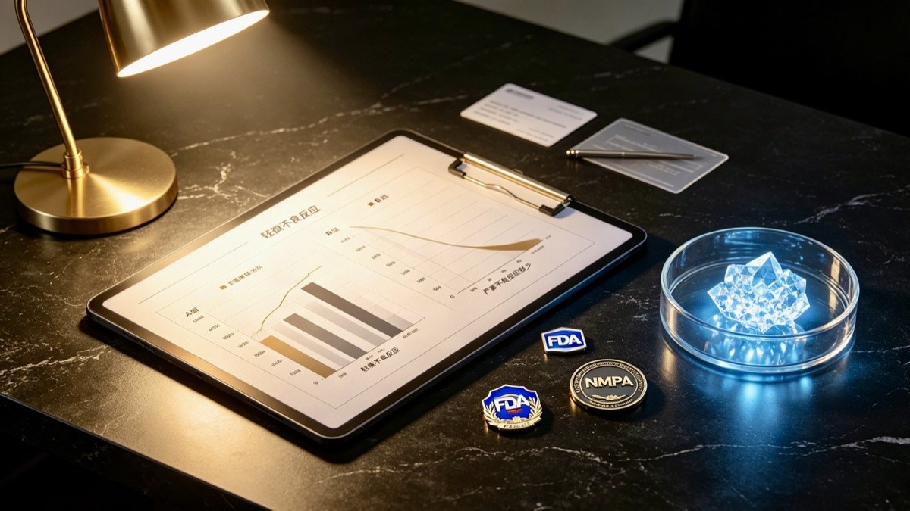
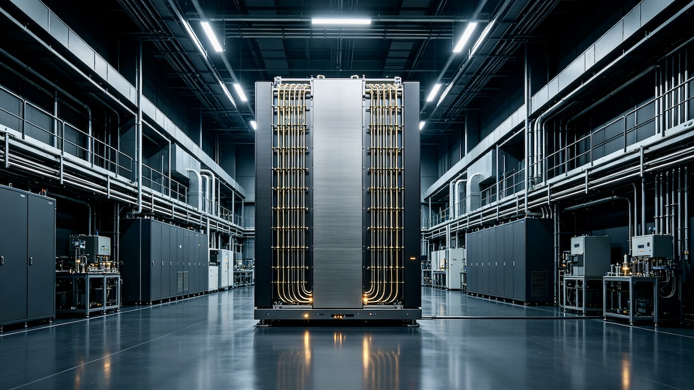
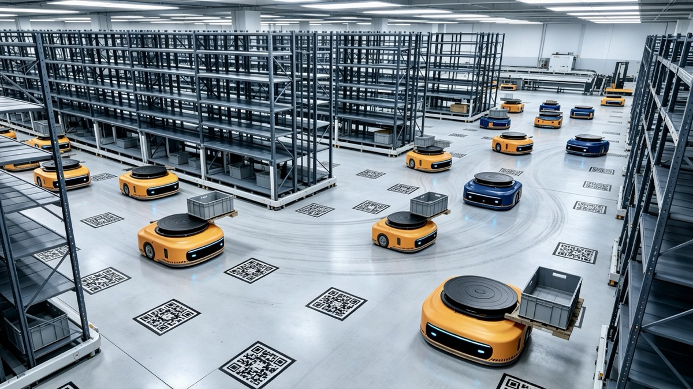

線上路演QuantumCore 線上路演 — 量子計算的商業化路徑
量子計算 · C 輪
現階段服務
我們專注於大中華區成長期科技與消費企業，為符合資格的專業投資者提供私募股權市場資訊、項目資訊及諮詢服務。
現階段僅提供資訊與諮詢服務，不構成投資要約、招攬或收益承諾。
開放下載時間以商店公佈為準。
界面及項目資料僅作示意

線上路演量子計算 · C 輪

即將公佈生物醫藥 · C+ 輪
界面及項目資料僅作示意

了解詳情量子計算 · 香港
生物醫藥 · 深圳

了解詳情智能機器人 · 大中華區
界面及項目資料僅作示意
界面示意，暫不展示項目資料
市場資訊
圍繞大中華區成長期科技與消費企業，提供私募股權市場相關資訊，協助專業投資者了解市場動態、行業背景與企業發展階段。
項目資訊與諮詢
聚焦大中華區 Pre-A 至 C 輪成長期企業，為專業投資者提供相關市場資訊、項目資訊及諮詢服務。
合規流程指引
說明專業投資者資格、資料提交及諮詢流程的相關要求。客戶盡職調查、反洗錢審查與個人資料處理，按適用規則及實際情況進行。
案例範圍
以下示意案例說明我們持續跟蹤的行業與發展階段，不構成對任何企業的推薦，亦不代表 HighBlock 的投資或業績。
專注基於新型拓撲量子比特的通用量子計算方案，2025 年完成室溫量子比特原型驗證，為全球少數在該技術路線取得突破的企業之一。
將新一代蛋白降解技術（PROTAC）應用於腫瘤治療，核心管線針對非小細胞肺癌，另有三條臨床前管線覆蓋其他實體瘤領域。
研發面向倉儲物流場景的自主移動機器人（AMR）與智能調度系統，核心能力為自研 3D 視覺 SLAM 演算法及群體智能調度平台。
專注下一代固態電池的研發與生產，半固態電池產品已於 2025 年實現量產，並獲主流車企訂單。
構建基於區塊鏈的真實資產（RWA）代幣化交易平台，以合規代幣化結構為私募股權二級市場提供流動性方案。
提供基於 AI 的醫療影像輔助診斷平台，以 SaaS 模式服務醫療機構，協助醫生提升診斷效率與準確率。
案例為示意內容：企業名稱與資料僅用於說明服務覆蓋範圍，不代表已發生的投資。
現階段僅提供資訊與諮詢服務。本網站不構成投資要約、招攬或收益承諾；項目介紹亦不代表 HighBlock 的投資或管理業績。
與我們聯絡
如欲了解服務範圍或預約諮詢，請與 HighBlock 聯絡。